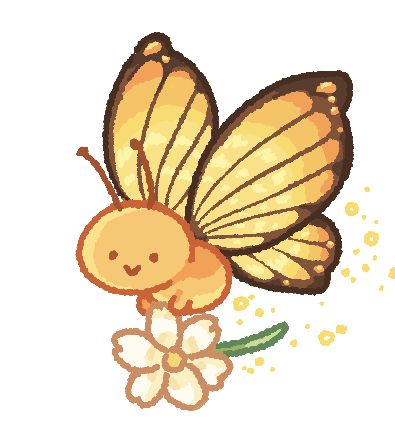

The butterfly landed beside another butterfly whose orange wings were marked with tiny black circles. Seeing a creature that looked familiar made the garden seem less enormous.
“Hey, are you new here?” the other butterfly asked
The butterfly nodded. The other butterfly introduced itself and began talking about how things are done in this garden as if there were only one correct way to fly, rest, and choose nectar. The butterfly enjoying listening to the other butterfly, yet wondered why this new friendship felt constricting.
What should the butterfly do?